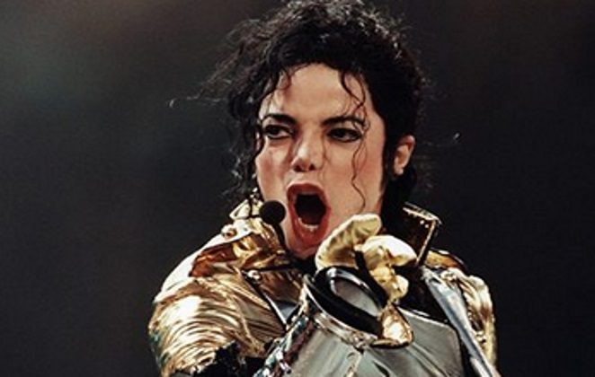
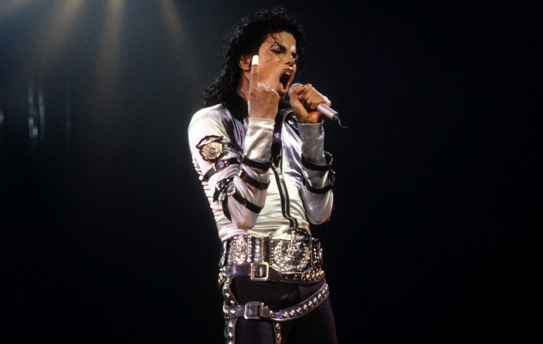

|
 Michael JacksonMichael Joseph Jackson (29 de agosto de 1958 — 25 de junho de 2009) foi um cantor, compositor e dançarino estadunidense. Apelidado de "Rei do Pop", é considerado uma das figuras culturais mais significativas do século XX e um dos maiores artistas de todos os tempos. Sua contribuição para a música, dança e moda, junto com sua conturbada vida pessoal, o tornou um dos assuntos mais dominantes da cultura pop durante sua vida. Oitavo filho nascido na família Jackson, Michael começou sua carreira profissional em 1964 junto com seus irmãos mais velhos Jackie, Tito, Jermaine e Marlon na banda The Jackson 5. Sua carreira solo começou em 1971 na Motown Records e no começo da década de 1980, ele já era uma figura importante no cenário musical pop. Seus videoclipes, que incluem "Beat It", "Billie Jean" e "Thriller" do álbum de 1982, Thriller, são creditados como passos importantes para romper barreiras raciais nos Estados Unidos e por ter transformado o clipe em um modelo de arte e peça promocional importante. A popularidade dos seus vídeos musicais ajudaram a alavancar esta arte e levaram o canal MTV a proeminência internacional. O álbum Bad (1987) foi o primeiro a levar cinco singles ao topo das paradas da Billboard Hot 100. Suas inovações na indústria da música prosseguiram nos anos 90, com canções de sucesso como "Black or White" e "Scream", que forjaram sua reputação como um artista dominante. Através de performance nos vídeos e no palco, Jackson popularizou técnicas de dança complicadas como a dança do robô e o moonwalk. Seu som e estilo influenciaram milhares de artistas pelo mundo.  Jackson é um dos artistas que mais bem sucedidos de todos os tempos, com mais de 350 milhões de cópias dos seus álbuns vendidos;[1] Thriller se tornou também um dos discos mais vendidos da história, com vendas estimadas em 66 milhões de cópias pelo mundo. Outros álbuns, incluindo Off the Wall (1979), Bad (1987), Dangerous (1991) e HIStory (1995), também foram enormes sucessos comerciais que venderam milhões de unidades. Michael Jackson ganhou centenas de prêmios ao longo da carreira (mais do que qualquer outro artista do cenário pop), e foi introduzido no Rock and Roll Hall of Fame duas vezes, e também no Salão da Fama da dança. Entre suas outras consquistas incluem sua entrada no Guinness World Records (de artista mais bem sucedido de todos os tempos), quinze prêmios Grammy (incluindo o Legend Award e o Lifetime Achievement Award), vinte e seis American Music Awards (mais do que qualquer outro artista) e treze singles que subiram ao topo da Billboard Hot 100 (mais do que qualquer outro artista masculina). Jackson é o único artista a colocar um single no top 10 da Billboard Hot 100 em cinco décadas diferentes. Em 2016, o total de dinheiro arrecadado por suas obras superou US$ 825 milhões de dólares, sendo o valor mais alto angariado por um artista na história da Forbes. Além do enorme sucesso comercial, Jackson também foi conhecido como um notável filantropo e humanitário, doando milhões de dólares durante toda sua carreira a causas beneficentes por meio da Dangerous World Tour, compactos voltados à caridade e manutenção de trinta e nove centros de caridades, através de sua própria fundação |